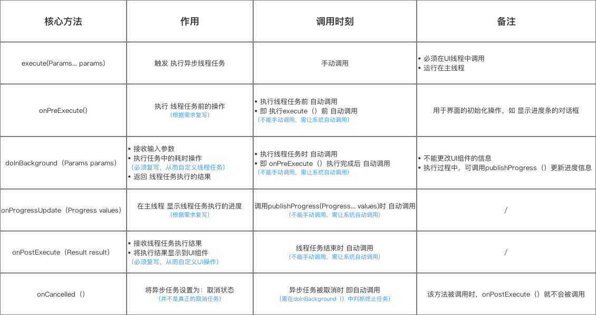
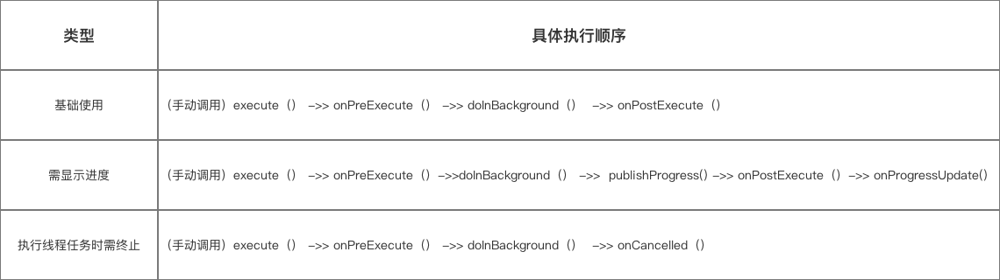

对于网络请求，按照平常我们的逻辑去写的时候，往往会出现这样的问题
为啥会是null呢？有很多同学来问过，我也跟他们解释过，无论是哪种程序，网络请求的执行，一定是特别耗时的操作（相较于我们执行其他平常的程序语句）毕竟打游戏都还有延迟呢，所以很容易出现这种情况，而如果你的程序下一步恰好开始直接对获取的JSONObject进行解析等操作，那么你的APP一般会直接崩溃。
所以怎么解决呢？其实也很简单，一方面，我们满可以让程序在进行网络请求的时候停下等网络请求执行完获取到返回的数据，也就是同步请求，但是谁要是敢这么干，立即打死。另一方面，可以等数据返回后再重新刷新界面，相当于在网络线程中进行请求，也就是我们okhttp用的.enqueue(callback)方法。
PS
但是首先我觉得有必要说明白OkHttp的异步机制，我讲过，OkHttp会自动帮我们开新线程，指的就是我们在异步执行一个请求的时候开启的新线程。所以请求传入的callback回调中的代码其实都是在这个新线程里执行的 。而这个线程会最终拿到网络请求的返回数据，所以我们要做的就是在拿到返回数据的callback里更新UI。
机制解析
我上次告诉大家了可以使用runOnUiThread，AsyncTask、Handler，这次给大家汇总解释一下。
Handler
众所周知，Android程序运行会开启一个UI线程，也就是主线程，用于处理UI事件。只有在UI线程中才能进行对UI的各种操作，如果在非UI线程中直接对界面元素进行操作，会报错。这是对与获取网络请求并更新UI页面这样的需求来说只能将代码写到UI线程中，这样才能更新UI线程。但是对于这种网络请求或者是耗时的工作，由于执行时间的不可确定性，可能会在执行代码时阻塞。要是将这样的代码写到UI主线程中，就会造成ANR（application not responding，如果UI线程阻塞超过几秒（现在一般是5秒），用户就会看到应用无响应的Dialog）异常，也就是程序无响应，影响客户体验。所以自Android 4.0之后，Android就不允许在主线程中访问网络，否则会报NetworkOnMainThreadException异常。这时另一个方法是新开一个子线程，用于网络访问，并将获取的数据发送给主线程。而子线程和UI线程之间进行通信的机制就是Handler。
说起Handler，就不得不提Message、MessageQueue以及Looper。
Handler:异步回调机制。作用就是在子线程中发送数据，通过sendMessage（）发送数据；在UI线程中接收数据，通过重写handlerMessage方法。如果希望Handler正常工作,在当前线程中要有一个Looper对象Looper:每个线程只能够有一个Looper,管理MessageQueue,不断地从中取出Message分发给对应的Handler处理！MessageQueue:消息队列,先进先出管理Message,在初始化Looper对象时会创建一个与之关联的MessageQueue;Message:Handler接收与处理的消息对象
通俗一点讲：当我们的子线程想修改Activity中的UI组件时,我们可以新建一个Handler对象,通过这个对象向主线程发送信息;而我们发送的信息会先到主线程的MessageQueue进行等待,由Looper按先入先出顺序取出,再根据message对象的what属性分发给对应的方法或者函数进行处理！
更多关于这四者直接关系，如何调用的可以看这篇博客
反正想要进行网络连接，必须在主线程中使用Handler机制，获取到子线程发来的数据。我们在Android定义一个按钮点击事件，当点击时，向服务器发送请求，并用handler更新UI。代码如下：
//主类主线程代码，这个Handler要作为类变量，他获取了主线程的Looper
Handler mHandler = new Handler(Looper.getMainLooper()) {
@Override
public void handleMessage(Message msg) {
super.handleMessage(msg);
switch (msg.what) {
case 1:
result = JSON.parseObject(msg.getData().getString("responseData"));
//继续处理UI，比如：
getPassword.setText(result.toString());
break;
default:
break;
}
}
};
//callback中的代码：
//获取一个message对象
message = Message.obtain();
//创建传递信息用的bundle
Bundle messageBundle = new Bundle();
//存入信息
messageBundle.putString("responseData",responseData);
//确定message的编号
message.what = 1;
//将bundle注入message
message.setData(messageBundle);
//发送信息
mHandler.sendMessage(message);
//完整代码会放在最后
其中重写了handleMessage（Message msg）方法，其中的msg就是写完子线程后在子线程中handler的sendMessage（Message msg）所传过来的msg信息，handleMessage方法中就可以对UI线程进行操作了。
创建 Handler 有两种方法：
1、在构造函数中指定 Looper：Handler handler = new Handler(Looper looper);
现在 handler指向了我们提供的Looper（实际上是 Looper 的消息队列）
2、使用空的构造函数：Handler handler = new Handler();
当我们使用空构造函数的时候，Handler 会自动指向和当前线程绑定的 Looper。真方便！
Handler 提供了很方便的方法用于创建消息并自动将它们添加到 Looper 消息队列。
runOnUiThread
这是最简单的一种方法了，可以无脑使用。
1 2 3 4 5 result = JSON.parseObject(responseData); GetInfo.this .runOnUiThread(()->{ getPassword.setText(result.toString()); });
破解魔法
我们一起来看看 Activity 源码中的相关部分：
1 2 3 4 5 6 7 8 9 10 11 final Handler mHandler = new Handler();private Thread mUiThread;public final void runOnUiThread (Runnable action) if (Thread.currentThread() != mUiThread) { mHandler.post(action); } else { action.run(); } }
看起来非常简单，首先我们检查当前运行的线程是否是主线线程。
如果是主线程–很棒！只需要调用 Runnable 的 run（） 方法。
但是如果不是主线程呢？
在这种情况下，我们会调用 mHandler.post() 并将我们的 Runnable 传递过去。然后在主线程中执行。
一切都从 Looper 开始
当我们创建一个新的 Java 线程时，我们重写它的 run() 方法。一个简单的线程实现看起来应该是这样的：
1 2 3 4 5 6 7 public class MyThread extends Thread @Override public void run () } }
好好的看一下 run() 方法，当线程执行完该方法中所有的语句后，线程就完成了。结束了。没用了。
如我我们想重复使用一个线程（一个很好的理由就是避免新线程创建以及减少内存消耗）我们必须让它保持存活状态并且等待接收新的指令。一个常用的方式就是在线程的 run() 方法里创建一个循环：
1 2 3 4 5 6 7 8 9 10 11 public class MyThread extends Thread private boolean running; @Override public void run () while (running) { } } }
只要 while 循环还在执行（即 run() 方法还没有执行完毕）–这个线程就保持存活状态。
这就是 Looper 所做的事情：
Looper。就是 LOOPING，并保持它的线程处于存活状态
关于 Looper 以下几点值得注意：
非主线程默认没有 Looper 你可创建一个 Looper 并将它绑定到一个线程
每一个线程只能绑定一个 Looper
所以，我们将线程中的 while 循环用 Looper 实现来替换：
1 2 3 4 5 6 7 8 public class MyThread extends Thread @Override public void run () Looper.prepare(); Looper.loop(); } }
真的很简单：
调用 Lopper.prepare() 是检查当前线程是否还没有绑定 Lopper（记住，每一个线程只能绑定一个 Looper），如果没有就创建一个 Looper 并和当前线程绑定。
调用 Looper.loop() 触发我们的 Looper 开始循环。
所以，现在 Looper 开始循环并保持线程处于存活状态，但是如果不能传递指令、任务或者其他事情让线程执行实际的任务，那么保持线程存活没有任何意义。
幸好，Looper 不仅仅是循环。当我们创建 Looper 的时候，会一并创建一个工作队列 （讲Handler的时候提到过）。这个队列称为消息队列因为它持有消息（Message ）对象。Looper配合viewRootImpl视图树的handler将所有的消息追加到主线程消息队列后面，一一执行。
例如，post() 方法就创建一条消息并将它添加到 Looper 队列的尾部。
如果我们希望消息持有一个任务（一个 Runnable），我们简单的将 Runnable 对象传递给 post() 方法就可以：
1 2 3 4 5 6 handler.post(new Runnable() { @Override public void run () } });
所以如果上面的handler用post方法其实本质上跟runOnUiThread是差不多的。
再来看看 Activity 的源码
现在我们再仔细的看一看runOnUiThread():
1 2 3 4 5 6 7 8 9 10 11 final Handler mHandler = new Handler();private Thread mUiThread;public final void runOnUiThread (Runnable action) if (Thread.currentThread() != mUiThread) { mHandler.post(action); } else { action.run(); } }
**记住：**这段代码是在主线程中执行，这意味着 mHandler 指向主线程的 Looper。
是的，应用主线程是唯一一个默认绑定了 Looper 线程 。
所以。。。当这一行代码执行的时候：
Handler 会创建一条持有我们传入的 Runnable 的消息，这条消息随后被添加到主线程的消息队列，然后等待 Handler 在它的Looper线程（主线程 ）中执行。
AsyncTask
不太想写了，以下AsyncTask转载自[credreamer的转载
通过AsyncTask可以实现
实现多线程
异步通信、消息传递实现工作线程 & 主线程（UI线程）之间的通信 ，即：将工作线程的执行结果传递给主线程，从而在主线程中执行相关的UI操作,从而保证线程安全
可以看看这个AsyncTask类
1 2 3 4 5 6 7 8 9 10 11 12 13 14 15 public abstract class AsyncTask <Params , Progress , Result > { ... } }
4.他有以下的方法

5.然后调用顺序是这样的:

然后我们去写一个例子看看
1.创建 AsyncTask 子类 & 根据需求实现核心方法
1 2 3 4 5 6 7 8 9 10 11 12 13 14 15 16 17 18 19 20 21 22 23 24 25 26 27 28 29 30 31 32 33 34 35 36 37 38 39 40 41 42 43 44 45 46 47 48 49 50 51 52 53 54 55 56 57 58 59 60 61 62 63 64 65 66 67 68 69 70 private class MyTask extends AsyncTask <Params , Progress , Result > .... @Override protected void onPreExecute ( ... } @Override protected String doInBackground (String ... params ... publishProgress(count); } @Override protected void onProgressUpdate (Integer... progresses ) ... } @Override protected void onPostExecute (String result ... } @Override protected void onCancelled ( ... } } MyTask mTask = new MyTask(); mTask.execute()；
创建 AsyncTask子类的实例对象（即 任务实例）
手动调用execute(（）从而执行异步线程任务
3.上面是介绍,然后我们再去写个例子去看看:
6. 实例讲解
下面，我将用1个实例讲解 具体如何使用 AsyncTask
6.1 实例说明
点击按钮 则 开启线程执行线程任务
显示后台加载进度
加载完毕后更新UI组件
期间若点击取消按钮，则取消加载
如下图
6.2 具体实现
建议先下载源码再看：Carson_Ho的Github地址：AsyncTask
1 2 3 4 5 6 7 8 9 10 11 12 13 14 15 16 17 18 19 20 21 22 23 24 25 26 27 28 29 30 31 32 33 34 35 36 37 38 39 40 <?xml version="1.0" encoding="utf-8"?> <RelativeLayout xmlns:android ="http://schemas.android.com/apk/res/android" xmlns:tools ="http://schemas.android.com/tools" android:layout_width ="match_parent" android:layout_height ="match_parent" android:gravity ="center" tools:context ="com.example.carson_ho.handler_learning.MainActivity" > <Button android:layout_centerInParent ="true" android:id ="@+id/button" android:layout_width ="wrap_content" android:layout_height ="wrap_content" android:text ="点我加载" /> <TextView android:id ="@+id/text" android:layout_below ="@+id/button" android:layout_centerInParent ="true" android:layout_width ="wrap_content" android:layout_height ="wrap_content" android:text ="还没开始加载!" /> <ProgressBar android:layout_below ="@+id/text" android:id ="@+id/progress_bar" android:layout_width ="fill_parent" android:layout_height ="wrap_content" android:progress ="0" android:max ="100" style ="?android:attr/progressBarStyleHorizontal" /> <Button android:layout_below ="@+id/progress_bar" android:layout_centerInParent ="true" android:id ="@+id/cancel" android:layout_width ="wrap_content" android:layout_height ="wrap_content" android:text ="cancel" /> </RelativeLayout >
主逻辑代码文件：MainActivity.java
1 2 3 4 5 6 7 8 9 10 11 12 13 14 15 16 17 18 19 20 21 22 23 24 25 26 27 28 29 30 31 32 33 34 35 36 37 38 39 40 41 42 43 44 45 46 47 48 49 50 51 52 53 54 55 56 57 58 59 60 61 62 63 64 65 66 67 68 69 70 71 72 73 74 75 76 77 78 79 80 81 82 83 84 85 86 87 88 89 90 91 92 93 94 95 96 97 98 99 100 101 102 103 104 105 106 107 108 109 110 111 112 113 114 115 116 117 118 119 120 121 122 123 124 125 126 127 128 129 130 public class MainActivity extends AppCompatActivity MyTask mTask; Button button,cancel; TextView text; ProgressBar progressBar; private class MyTask extends AsyncTask <String , Integer , String > @Override protected void onPreExecute ( text.setText("加载中" ); } @Override protected String doInBackground (String ... params try { int count = 0 ; int length = 1 ; while (count<99 ) { count += length; publishProgress(count); Thread.sleep(50 ); } }catch (InterruptedException e) { e.printStackTrace(); } return null ; } @Override protected void onProgressUpdate (Integer... progresses ) progressBar.setProgress(progresses[0 ]); text.setText("loading..." + progresses[0 ] + "%" ); } @Override protected void onPostExecute (String result text.setText("加载完毕" ); } @Override protected void onCancelled ( text.setText("已取消" ); progressBar.setProgress(0 ); } } @Override protected void onCreate (Bundle savedInstanceState ) super .onCreate(savedInstanceState); setContentView(R.layout.activity_main); button = (Button) findViewById(R.id.button); cancel = (Button) findViewById(R.id.cancel); text = (TextView) findViewById(R.id.text); progressBar = (ProgressBar) findViewById(R.id.progress_bar); mTask = new MyTask(); button.setOnClickListener(new View.OnClickListener() { @Override public void onClick (View v ) mTask.execute(); } }); cancel = (Button) findViewById(R.id.cancel); cancel.setOnClickListener(new View.OnClickListener() { @Override public void onClick (View v ) mTask.cancel(true ); } }); } }
代码
我的httpUtil
1 2 3 4 5 6 7 8 9 10 11 12 13 14 15 16 17 18 19 20 21 22 23 24 25 26 27 28 29 30 31 32 33 34 35 36 37 38 39 40 41 42 43 44 45 46 47 48 49 50 51 public class HttpUtil public JSONObject object; Callback callback = new Callback() { @Override public void onResponse (Call call, Response response) throws IOException String responseData = response.body().string(); object = JSON.parseObject(responseData); } @Override public void onFailure (Call call, IOException e) e.printStackTrace(); } }; private void sendGet (String address, okhttp3.Callback callback) OkHttpClient client = new OkHttpClient(); Request request = new Request.Builder() .url(address) .get() .build(); client.newCall(request).enqueue(callback); } private void sendPost (String address, okhttp3.Callback callback,RequestBody body) OkHttpClient client = new OkHttpClient(); Request request = new Request.Builder() .url(address) .post(body) .build(); client.newCall(request).enqueue(callback); } public void OKHttpWithCallBack (boolean isGet,String address,Callback callback,RequestBody body) if (isGet){ sendGet(address,callback); }else { sendPost(address,callback,body); } } public JSONObject OKHttpWithoutCallBack (boolean isGet,String address, RequestBody body) if (isGet){ sendGet(address,callback); }else { sendPost(address,callback,body); } return object; } }
Handler代码：
java:
1 2 3 4 5 6 7 8 9 10 11 12 13 14 15 16 17 18 19 20 21 22 23 24 25 26 27 28 29 30 31 32 33 34 35 36 37 38 39 40 41 42 43 44 45 46 47 48 49 50 51 52 53 54 55 56 57 58 59 60 61 62 63 64 65 66 67 68 69 70 71 72 73 74 75 76 77 78 79 80 81 public class GetInfo extends AppCompatActivity HttpUtil httpUtil = new HttpUtil(); TextView getAccount; TextView getPassword; EditText textUsername; Button buttonGetInfo; Button buttonIntent; JSONObject result; Message message; Handler mHandler = new Handler(Looper.getMainLooper()) { @Override public void handleMessage (Message msg) super .handleMessage(msg); switch (msg.what) { case 1 : result = JSON.parseObject(msg.getData().getString("responseData" )); System.out.println(); getPassword.setText(result.toString()); break ; default : break ; } } }; @Override protected void onCreate (Bundle savedInstanceState) super .onCreate(savedInstanceState); setContentView(R.layout.activity_get_info); getAccount = findViewById(R.id.account_text); getPassword = findViewById(R.id.password_text); textUsername = findViewById(R.id.text_username); buttonGetInfo = findViewById(R.id.button_get_info); buttonIntent = findViewById(R.id.button_intent2); buttonGetInfo.setOnClickListener(view -> { getInfo(); }); } private void getInfo () httpUtil.OKHttpWithCallBack( true , "http://82.156.169.66:8181/user/login?account=1234&password=1234" , callback, null ); } Callback callback = new Callback() { @Override public void onResponse (Call call, Response response) throws IOException String responseData = response.body().string(); if (responseData != null ){ message = Message.obtain(); Bundle messageBundle = new Bundle(); messageBundle.putString("responseData" ,responseData); message.what = 1 ; message.setData(messageBundle); mHandler.sendMessage(message); Log.i("success" , responseData.toString()); }else { Log.e("error" , "onResponse: " ); } } @Override public void onFailure (Call call, IOException e) e.printStackTrace(); } }; }
xml:
1 2 3 4 5 6 7 8 9 10 11 12 13 14 15 16 17 18 19 20 21 22 23 24 25 26 27 28 29 30 31 32 33 34 35 36 37 38 39 40 41 42 43 44 45 46 47 48 49 50 51 52 53 54 55 56 57 58 59 60 61 62 63 64 65 66 67 68 69 70 71 72 73 74 75 <?xml version="1.0" encoding="utf-8"?> <LinearLayout xmlns:android ="http://schemas.android.com/apk/res/android" xmlns:app ="http://schemas.android.com/apk/res-auto" xmlns:tools ="http://schemas.android.com/tools" android:layout_width ="match_parent" android:layout_height ="match_parent" android:orientation ="vertical" tools:context =".GetInfo" > <TextView android:id ="@+id/get_account_text" android:layout_width ="wrap_content" android:layout_height ="wrap_content" android:text ="@string/get_info_title" android:layout_marginStart ="90dp" android:layout_marginTop ="54dp" android:textSize ="24sp" /> <EditText android:id ="@+id/text_username" android:layout_width ="256dp" android:layout_height ="wrap_content" android:layout_marginStart ="90dp" android:layout_marginTop ="12dp" android:background ="@drawable/edittext_selector" android:hint ="用户名" android:padding ="8dp" android:textSize ="16sp" /> <TextView android:id ="@+id/account_text" android:layout_width ="wrap_content" android:layout_height ="16dp" android:layout_marginStart ="90dp" android:layout_marginTop ="44dp" android:textSize ="18sp" /> <TextView android:id ="@+id/password_text" android:layout_width ="wrap_content" android:layout_height ="wrap_content" android:layout_marginStart ="90dp" android:layout_marginTop ="14dp" android:textSize ="18sp" /> <LinearLayout android:layout_width ="match_parent" android:layout_height ="wrap_content" android:orientation ="horizontal" > <Button android:id ="@+id/button_get_info" android:layout_width ="wrap_content" android:layout_height ="wrap_content" android:text ="获取" android:padding ="8dp" android:layout_marginStart ="90dp" android:layout_marginTop ="64dp" android:textSize ="18sp" android:background ="@color/blue" /> <Button android:id ="@+id/button_intent2" android:layout_width ="wrap_content" android:layout_height ="wrap_content" android:text ="跳转" android:padding ="8dp" android:layout_marginStart ="50dp" android:layout_marginTop ="64dp" android:textSize ="18sp" android:background ="@color/blue" /> </LinearLayout > </LinearLayout >
runOnUiThread代码：
1 2 3 4 5 6 7 8 9 10 11 12 13 14 15 16 17 18 19 20 21 22 23 24 25 26 27 28 29 30 31 32 33 34 35 36 37 38 39 40 41 42 43 44 45 46 47 48 49 50 51 52 53 54 55 56 57 58 59 60 61 public class GetInfo extends AppCompatActivity HttpUtil httpUtil = new HttpUtil(); TextView getAccount; TextView getPassword; EditText textUsername; Button buttonGetInfo; Button buttonIntent; JSONObject result; @Override protected void onCreate (Bundle savedInstanceState) super .onCreate(savedInstanceState); setContentView(R.layout.activity_get_info); getAccount = findViewById(R.id.account_text); getPassword = findViewById(R.id.password_text); textUsername = findViewById(R.id.text_username); buttonGetInfo = findViewById(R.id.button_get_info); buttonIntent = findViewById(R.id.button_intent2); buttonGetInfo.setOnClickListener(view -> { getInfo(); }); } private void getInfo () httpUtil.OKHttpWithCallBack( true , "http://82.156.169.66:8181/user/login?account=1234&password=1234" , callback, null ); } Callback callback = new Callback() { @Override public void onResponse (Call call, Response response) throws IOException String responseData = response.body().string(); if (responseData != null ){ result = JSON.parseObject(responseData); GetInfo.this .runOnUiThread(()->{ getPassword.setText(result.toString()); }); Log.i("success" , responseData.toString()); }else { Log.e("error" , "onResponse: " ); } } @Override public void onFailure (Call call, IOException e) e.printStackTrace(); } }; }